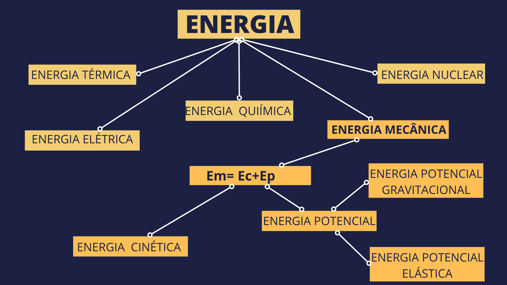

COMPETÊNCIAS
Analisar fenômenos naturais e processos tecnológicos, com base nas interações e relações entre matéria e energia, para propor ações individuais e coletivas que aperfeiçoem processos produtivos, minimizem impactos socioambientais e melhorem as condições de vida em âmbito local, regional e global.
HABILIDADES
(EM13CNT101) Analisar e representar, com ou sem o uso de dispositivos e de aplicativos digitais específicos, as transformações e conservações em sistemas que envolvam quantidade de matéria, de energia e de movimento para realizar previsões sobre seus comportamentos em situações cotidianas e em processos produtivos que priorizem o desenvolvimento sustentável, o uso consciente dos recursos naturais e a preservação da vida em todas as suas formas.
OBJETIVOS GERAIS
Observar e relacionar, no dia-a-dia, as associações energéticas entre a Física a Química e a Biologia. Identificar as transformações energia que ocorrem em dispositivos e processos naturais encontrados no nosso cotidiano. Identificar as várias formas de energia, observando as pontes estabelecidas entre vários segmentos da Física.
OBJETIVOS ESPECIFICOS
Identificar o processo de construção do conceito de energia como não linear, percebendo a contribuição dos diversos ramos da física na percepção de que existia um fator comum em associado aos diversos tipos de força. Classificar as formas de manifestação de Energia na natureza através de suas características; Perceber no conceito de Energia uma manifestação física, constante no universo que não pode ser criada e nem destruída e sim transformada em suas várias manifestações.
MOMENTOS DA EXPERIÊNCIA DE APRENDIZAGEM
Momento 1 (12 min)
Iniciaremos com o vídeo: Energia do canal do youtube Nerdologia, esse vídeo aborda a importância da capacidade humana de manipular energia para a construção da sociedade moderna. Em seguida media-se uma reflexão de como nossa vida seria diferente se não tivéssemos a capacidade de manipular energia. Através dessa etapa pretende-se atentar o estudante para a relevância do tema energia para sua vida, e assim tornar o objeto de conhecimento significativo para ele.
Momento 2 (10 min)
Em equipe, será solicitado que os estudantes montem um quebra cabeça com os principais eventos históricos que nos permitiram construir o conceito de energia e consequentemente ser capaz de manipulá-la, de início os eventos estarão sem data pré-estabelecidas, eles usarão a intuição para ordenar da maneira que lhes pareça mais adequada. É esperado que eles o façam de forma linear com um evento após o outro. Posteriormente será solicitado que eles compartilhem entre as equipes a construção que fizeram e comparem os resultados. Finaliza-se datando os eventos, de forma que eles percebam que muitos eventos ocorreram de forma simultânea, nesse momento eles serão mediados a perceber que na verdade os eventos ocorreram de forma não linear e acabaram convergindo no conceito atual de energia.
linha do Tempo História da Eletricidade de FRANCIELE PASTORIMomento 3 ( 5 min)
Construção de um mapa de conceito coletivo, conceituando os diversos tipos de energia com foco em energia mecânica e suas manifestações.
Momento 4 ( 20 min)
Atividade experimental virtual com o Phet Colorado : Energia na pista de skate, nessa atividade eles irão realizar medições com os instrumentos da plataforma mediado via questões propositivas, visando compreender o conceito de conservação e transformação de energia